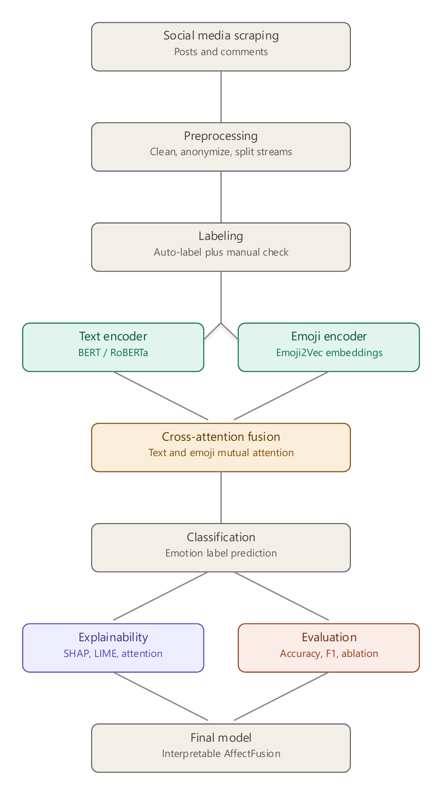

Dual-Stream v4 Methodology & Schema
Each post is decomposed into clean text, normalized Unicode emoji glyphs, CLDR natural-language demoji descriptions, and quantitative affective cues—connecting all completed Phase-I milestones (Steps 1–8) to our Next Phase Bidirectional Cross-Attention & XAI architecture (Steps 9–11).
Plate ITap to zoom ↗

AffectFusion v4 11-Step Architecture
Connects completed Phase-I Consensus Gold benchmarks to Next Phase Cross-Attention & XAI.
Plate IITap to zoom ↗

Conceptual Multimodal Flow
Dual-modality harvesting, stream alignment, fusion modeling, and human-grounded evaluation.
Plate IIITap to zoom ↗

Operational Execution Workflow
Sequential pipeline verifying zero-leakage handoffs across every stage.
Unified Dual-Stream Parquet Schema
25 core Arrow/Parquet columns across train (24K), validation (3K), and test (3K), plus is_double_adjudicated on Consensus Gold splits:
← Swipe table →
| Group | Columns |
|---|---|
| IDs | row_id, platform |
| Streams | raw_text, text_stream, emoji_stream, demoji_text, baseline_input |
| Labels | label, label_id (0–8), language_tag, language_id (0–2) |
| Density | has_emoji, emoji_count, unique_emoji_count, emoji_density, text_length, word_count |
| Cues | exclamation_count, question_count, uppercase_ratio, has_sarcasm_emoji_cue |
| Audit | ai_confidence, is_augmented, is_external_train_only, is_human_verified, is_double_adjudicated |